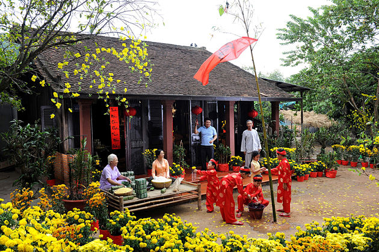

Вьетнамский Новый Год
Вьетнамский Новый Год. Одним из самых важных и популярных праздников в культуре страны является Вьетнамский Новый Год – Тет (праздник первого утра).
В этот день во Вьетнаме празднуется приход весны, который согласно вьетнамской вариации китайского лунно-солнечного календаря приходится на конец января или начало февраля.
Готовясь к празднику, вьетнамцы убираются в своих домах и готовят специальные праздничные блюда. Новый год во Вьетнаме – это семейный праздник.
Вьетнамцы стараются провести праздник в кругу семьи, поклониться своим предкам, привести их могилы в порядок, посетить родственников и друзей.
- поход в гости в первый день нового года, этому посвящен особый ритуал. Вьетнамцы обращают большое внимание на то, кто наносит им визит первым в году, поэтому в первый день нового года никто не приходит в чужой дом без приглашения;
- традиция дарить детям деньги в красных конвертах;
- пожелания долголетия пожилым людям;
- Доброго здоровья

День Независимости Вьетнама
День Независимости Вьетнама - 2 сентября 1945 года является важной вехой и поворотной точкой в истории Вьетнама – это день провозглашения Демократической Республики Вьетнам.
В этот день на площади Ба Динь в городе Ханой президент Хошимин зачитал Декларацию Независимости, официально провозглашающую независимость от Франции и Японии и суверенитет страны.
2 сентября празднуется как День Национальной Независимости современной Социалистической Республики Вьетнам. Отличительным признаком праздника является появление вьетнамских флагов повсюду, окрашивающих всю страну в красный и желтый цвета. Каждый год в этот день на площади Ба Динь проводится марш, в крупных городах Вьетнама можно наблюдать праздничный салют.
2 сентября празднуется как День Национальной Независимости современной Социалистической Республики Вьетнам. Отличительным признаком праздника является появление вьетнамских флагов повсюду, окрашивающих всю страну в красный и желтый цвета. Каждый год в этот день на площади Ба Динь проводится марш, в крупных городах Вьетнама можно наблюдать праздничный салют.
День Объединения (День Победы)
30 апреля 1975 года Вьетнамская Народная Армия завоевала Сайгон - столицу Южного Вьетнама.
Этот день отмечается как день окончания Вьетнамской войны и последовавшего за ним объединения страны под коммунистической властью.
Сайгон был переименован в Хошимин. Праздник является государственным и отмечается каждый год как день освобождения Вьетнама.